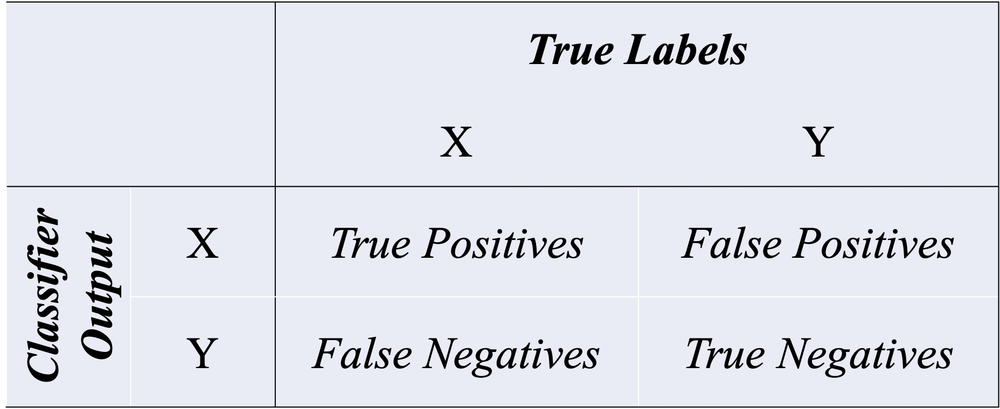

Machine Learning: A Simple Example¶
Let’s assume that we have collected a list of personal names and we have their corresponding gender labels, i.e., whether the name is a male or female one.
The goal of this example is to create a classifier that would automatically classify a given name into either male or female.
A Quick Example: Name Gender Prediction¶
Prepare Data¶
We use the data provided in NLTK. Please download the corpus data if necessary.
We load the corpus,
nltk.corpus.namesand randomize it before we proceed.
import nltk
import numpy as np
from nltk.corpus import names
import random
labeled_names = ([(name, 'male') for name in names.words('male.txt')] +
[(name, 'female') for name in names.words('female.txt')])
random.shuffle(labeled_names)
Feature Engineering¶
As now our unit for classification is a name. In feature engineering, our goal is to transform the texts (i.e., names) into vectorized reprsentations.
To start with, let’s represent each text (name) by using its last character as the features.
def text_vectorizer(word):
return {'last_letter': word[-1]}
text_vectorizer('Shrek')
{'last_letter': 'k'}
Train-Test Split¶
We then apply the feature engineering method to every text in the data and split the data into train and test sets.
featuresets = [(text_vectorizer(n), gender) for (n, gender) in labeled_names]
train_set, test_set = featuresets[500:], featuresets[:500]
Train the Model¶
classifier = nltk.NaiveBayesClassifier.train(train_set)
Model Prediction¶
classifier.classify(text_vectorizer('Neo'))
classifier.classify(text_vectorizer('Trinity'))
'female'
print(nltk.classify.accuracy(classifier, test_set))
0.744
Post-hoc Analysis¶
One of the most important steps after model training is to examine which features contribute the most to the classifier prediction of the class.
classifier.show_most_informative_features(5)
Most Informative Features
last_letter = 'k' male : female = 40.4 : 1.0
last_letter = 'a' female : male = 35.7 : 1.0
last_letter = 'p' male : female = 20.9 : 1.0
last_letter = 'f' male : female = 15.9 : 1.0
last_letter = 'v' male : female = 11.2 : 1.0
Please note that in
NLTK, we can use theapply_featuresto create training and test datasets.When you have a very large feature set, this can be more effective in terms of memory management.
from nltk.classify import apply_features
train_set = apply_features(text_vectorizer, labeled_names[500:])
test_set = apply_features(text_vectorizer, labeled_names[:500])
How can we improve the model?¶
In the following, we will talk about methods that we may consider to further improve the model training.
Feature Engineering
Error Analysis
Cross Validation
Try Different Machine-Learning Algorithms
(Ensemble Methods)
More Sophisticated Feature Engineering¶
We can extract more features from the names.
Use the following features for vectorized representations of names:
The first/last letter
Frequencies of all 26 alphabets in the names
def text_vectorizer2(name):
features = {}
features["first_letter"] = name[0].lower()
features["last_letter"] = name[-1].lower()
for letter in 'abcdefghijklmnopqrstuvwxyz':
features["count({})".format(letter)] = name.lower().count(letter)
features["has({})".format(letter)] = (letter in name.lower())
return features
text_vectorizer2('John')
{'first_letter': 'j',
'last_letter': 'n',
'count(a)': 0,
'has(a)': False,
'count(b)': 0,
'has(b)': False,
'count(c)': 0,
'has(c)': False,
'count(d)': 0,
'has(d)': False,
'count(e)': 0,
'has(e)': False,
'count(f)': 0,
'has(f)': False,
'count(g)': 0,
'has(g)': False,
'count(h)': 1,
'has(h)': True,
'count(i)': 0,
'has(i)': False,
'count(j)': 1,
'has(j)': True,
'count(k)': 0,
'has(k)': False,
'count(l)': 0,
'has(l)': False,
'count(m)': 0,
'has(m)': False,
'count(n)': 1,
'has(n)': True,
'count(o)': 1,
'has(o)': True,
'count(p)': 0,
'has(p)': False,
'count(q)': 0,
'has(q)': False,
'count(r)': 0,
'has(r)': False,
'count(s)': 0,
'has(s)': False,
'count(t)': 0,
'has(t)': False,
'count(u)': 0,
'has(u)': False,
'count(v)': 0,
'has(v)': False,
'count(w)': 0,
'has(w)': False,
'count(x)': 0,
'has(x)': False,
'count(y)': 0,
'has(y)': False,
'count(z)': 0,
'has(z)': False}
train_set = apply_features(text_vectorizer2, labeled_names[500:])
test_set = apply_features(text_vectorizer2, labeled_names[:500])
classifier = nltk.NaiveBayesClassifier.train(train_set)
print(nltk.classify.accuracy(classifier, test_set))
0.778
classifier.show_most_informative_features(n=20)
Most Informative Features
last_letter = 'k' male : female = 40.4 : 1.0
last_letter = 'a' female : male = 35.7 : 1.0
last_letter = 'p' male : female = 20.9 : 1.0
last_letter = 'f' male : female = 15.9 : 1.0
last_letter = 'v' male : female = 11.2 : 1.0
last_letter = 'd' male : female = 10.2 : 1.0
count(v) = 2 female : male = 8.8 : 1.0
last_letter = 'm' male : female = 8.5 : 1.0
last_letter = 'o' male : female = 8.2 : 1.0
last_letter = 'r' male : female = 6.4 : 1.0
last_letter = 'w' male : female = 5.4 : 1.0
count(a) = 3 female : male = 5.2 : 1.0
count(i) = 3 male : female = 5.1 : 1.0
last_letter = 'g' male : female = 5.1 : 1.0
first_letter = 'w' male : female = 4.9 : 1.0
count(w) = 1 male : female = 4.6 : 1.0
has(w) = True male : female = 4.5 : 1.0
last_letter = 'z' male : female = 4.3 : 1.0
last_letter = 't' male : female = 4.3 : 1.0
last_letter = 's' male : female = 4.2 : 1.0
Train-Development-Test Data Splits for Error Analysis¶
Normally we have train-test splits of data
Sometimes we use development (dev) set for error analysis and feature engineering.
Now let’s train the model on the training set and first check the classifier’s performance on the dev set.
We then identify the errors the classifier made in the dev set.
We perform error analysis for further improvement.
train_names = labeled_names[1500:]
devtest_names = labeled_names[500:1500]
test_names = labeled_names[:500]
train_set = [(text_vectorizer2(n), gender) for (n, gender) in train_names]
devtest_set = [(text_vectorizer2(n), gender) for (n, gender) in devtest_names]
test_set = [(text_vectorizer2(n), gender) for (n, gender) in test_names]
classifier = nltk.NaiveBayesClassifier.train(train_set)
print(nltk.classify.accuracy(classifier, devtest_set))
0.783
errors = []
for (name, tag) in devtest_names:
guess = classifier.classify(text_vectorizer2(name))
if guess != tag:
errors.append((tag, guess, name))
import csv
with open('error-analysis.csv', 'w') as f:
# using csv.writer method from CSV package
write = csv.writer(f)
write.writerow(['tag', 'guess', 'name'])
write.writerows(errors)
Evaluation¶

Confusion Matrix:
True positives are relevant items that we correctly identified as relevant.
True negatives are irrelevant items that we correctly identified as irrelevant.
False positives (or Type I errors) are irrelevant items that we incorrectly identified as relevant.
False negatives (or Type II errors) are relevant items that we incorrectly identified as irrelevant.
Given these four numbers, we can define the following model evaluation metrics:
Accuracy: How many items were correctly classified?
Precision: How many of the items identified by the classifier as relevant are indeed relevant, is TP/(TP+FP).
Recall: How many of the true relevant items were successfully identified by the classifier, is TP/(TP+FN).
F-Measure (or F-Score): the harmonic mean of the precision and recall,i.e.:
print('Accuracy: {:4.2f}'.format(nltk.classify.accuracy(classifier, test_set)))
Accuracy: 0.79
## Compute the Confusion Matrix
t_f = [feature for (feature, label) in test_set] # features of test set
t_l = [label for (feature, label) in test_set] # labels of test set
t_l_pr = [classifier.classify(f) for f in t_f] # predicted labels of test set
cm = nltk.ConfusionMatrix(t_l, t_l_pr)
cm = nltk.ConfusionMatrix(t_l, t_l_pr)
print(cm.pretty_format(sort_by_count=True, show_percents=True, truncate=9))
| f |
| e |
| m m |
| a a |
| l l |
| e e |
-------+---------------+
female | <53.0%> 10.0% |
male | 11.0% <26.0%>|
-------+---------------+
(row = reference; col = test)
def createCM(classifier, test_set):
t_f = [feature for (feature, label) in test_set]
t_l = [label for (feature, label) in test_set]
t_l_pr = [classifier.classify(f) for f in t_f]
cm = nltk.ConfusionMatrix(t_l, t_l_pr)
print(cm.pretty_format(sort_by_count=True, show_percents=True, truncate=9))
createCM(classifier, test_set)
| f |
| e |
| m m |
| a a |
| l l |
| e e |
-------+---------------+
female | <53.0%> 10.0% |
male | 11.0% <26.0%>|
-------+---------------+
(row = reference; col = test)
Cross Validation¶
We can also check our average model performance using the cross-validation method.
 (Source: https://scikit-learn.org/stable/modules/cross_validation.html)¶
(Source: https://scikit-learn.org/stable/modules/cross_validation.html)¶
import sklearn.model_selection
kf = sklearn.model_selection.KFold(n_splits=10)
acc_kf = [] ## accuracy holder
## Cross-validation
for train_index, test_index in kf.split(train_set):
#print("TRAIN:", train_index, "TEST:", test_index)
classifier = nltk.NaiveBayesClassifier.train(
train_set[train_index[0]:train_index[len(train_index) - 1]])
cur_fold_acc = nltk.classify.util.accuracy(
classifier, train_set[test_index[0]:test_index[len(test_index) - 1]])
acc_kf.append(cur_fold_acc)
print('accuracy:', np.round(cur_fold_acc, 2))
accuracy: 0.74
accuracy: 0.78
accuracy: 0.79
accuracy: 0.78
accuracy: 0.8
accuracy: 0.78
accuracy: 0.78
accuracy: 0.75
accuracy: 0.82
accuracy: 0.76
np.mean(acc_kf)
0.7769708180790742
Try Different Machine Learning Algorithms¶
Try Maxent Classifier¶
Maxent is memory hungry, slower, and it requires
numpy.
%%time
from nltk.classify import MaxentClassifier
classifier_maxent = MaxentClassifier.train(train_set,
algorithm='gis',
trace=0,
max_iter=100,
min_lldelta=0.5)
CPU times: user 5.9 s, sys: 12.8 ms, total: 5.91 s
Wall time: 5.96 s
Note
The default algorithm for training is iis (Improved Iterative Scaling). Another alternative is gis (General Iterative Scaling), which is faster.
nltk.classify.accuracy(classifier_maxent, test_set)
0.63
classifier_maxent.show_most_informative_features(n=20)
-0.178 last_letter=='k' and label is 'female'
-0.165 last_letter=='a' and label is 'male'
-0.117 last_letter=='p' and label is 'female'
-0.106 count(v)==2 and label is 'male'
-0.094 last_letter=='f' and label is 'female'
-0.086 count(a)==3 and label is 'male'
-0.078 last_letter=='v' and label is 'female'
-0.078 last_letter=='w' and label is 'female'
-0.072 last_letter=='d' and label is 'female'
-0.064 last_letter=='m' and label is 'female'
-0.061 last_letter=='o' and label is 'female'
-0.060 last_letter=='i' and label is 'male'
-0.055 count(y)==2 and label is 'male'
-0.052 count(e)==3 and label is 'male'
-0.048 count(a)==2 and label is 'male'
-0.047 last_letter=='r' and label is 'female'
-0.046 last_letter=='z' and label is 'female'
0.044 last_letter=='c' and label is 'male'
0.043 count(u)==3 and label is 'male'
0.043 count(g)==3 and label is 'male'
createCM(classifier_maxent, test_set)
| f |
| e |
| m m |
| a a |
| l l |
| e e |
-------+---------------+
female | <63.0%> . |
male | 37.0% <.>|
-------+---------------+
(row = reference; col = test)
%%time
for train_index, test_index in kf.split(train_set):
#print("TRAIN:", train_index, "TEST:", test_index)
classifier = MaxentClassifier.train(
train_set[train_index[0]:train_index[len(train_index) - 1]],
algorithm='gis',
trace=0,
max_iter=10,
min_lldelta=0.5)
print(
'accuracy:',
nltk.classify.util.accuracy(
classifier,
train_set[test_index[0]:test_index[len(test_index) - 1]]))
accuracy: 0.65527950310559
accuracy: 0.6304347826086957
accuracy: 0.6459627329192547
accuracy: 0.6024844720496895
accuracy: 0.6034214618973561
accuracy: 0.6345256609642301
accuracy: 0.6205287713841369
accuracy: 0.6205287713841369
accuracy: 0.6438569206842923
accuracy: 0.6329704510108864
CPU times: user 59.3 s, sys: 76.5 ms, total: 59.3 s
Wall time: 59.7 s
Try Decision Tree¶
Parameters:
binary: whether the features are binaryentropy_cutoff: a value used during tree refinement process (entropy=1 -> high-level uncertainty; entropy = 0 -> perfect model prediction)depth_cutoff: to control the depth of the treesupport_cutoff: the mimimum number of instances that are required to make a decision about a feature.
%%time
from nltk.classify import DecisionTreeClassifier
classifier_dt = DecisionTreeClassifier.train(train_set,
binary=True,
entropy_cutoff=0.7,
depth_cutoff=5,
support_cutoff=5)
CPU times: user 15.6 s, sys: 17.9 ms, total: 15.6 s
Wall time: 15.8 s
nltk.classify.accuracy(classifier_dt, test_set)
0.714
createCM(classifier_dt, test_set)
| f |
| e |
| m m |
| a a |
| l l |
| e e |
-------+---------------+
female | <60.2%> 2.8% |
male | 25.8% <11.2%>|
-------+---------------+
(row = reference; col = test)
%%time
for train_index, test_index in kf.split(train_set):
#print("TRAIN:", train_index, "TEST:", test_index)
classifier = DecisionTreeClassifier.train(
train_set[train_index[0]:train_index[len(train_index) - 1]],
binary=True,
entropy_cutoff=0.7,
depth_cutoff=5,
support_cutoff=5)
print(
'accuracy:',
nltk.classify.util.accuracy(
classifier,
train_set[test_index[0]:test_index[len(test_index) - 1]]))
accuracy: 0.7267080745341615
accuracy: 0.7204968944099379
accuracy: 0.7375776397515528
accuracy: 0.7080745341614907
accuracy: 0.7122861586314152
accuracy: 0.7169517884914464
accuracy: 0.7200622083981337
accuracy: 0.6982892690513219
accuracy: 0.7340590979782271
accuracy: 0.7216174183514774
CPU times: user 2min 37s, sys: 368 ms, total: 2min 37s
Wall time: 2min 40s
Try sklearn Classifiers¶
sklearnis a very useful module for machine learning. We will talk more about this module in our later lectures.This package provides a lot more ML algorithms for classification tasks.
Naive Bayes in sklearn¶
from nltk.classify.scikitlearn import SklearnClassifier
from sklearn.naive_bayes import MultinomialNB
sk_classifier = SklearnClassifier(MultinomialNB())
sk_classifier.train(train_set)
<SklearnClassifier(MultinomialNB())>
nltk.classify.accuracy(sk_classifier, test_set)
0.79
Logistic Regression in sklearn¶
from sklearn.linear_model import LogisticRegression
sk_classifier = SklearnClassifier(LogisticRegression(max_iter=500))
sk_classifier.train(train_set)
nltk.classify.accuracy(sk_classifier, test_set)
0.798
Support Vector Machine in sklearn¶
sklearnprovides several implementations for Support Vector Machines.Please see its documentation for more detail: Support Vector Machine
from sklearn.svm import SVC
sk_classifier = SklearnClassifier(SVC())
sk_classifier.train(train_set)
nltk.classify.accuracy(sk_classifier, test_set)
0.82
from sklearn.svm import LinearSVC
sk_classifier = SklearnClassifier(LinearSVC(max_iter=2000))
sk_classifier.train(train_set)
nltk.classify.accuracy(sk_classifier, test_set)
0.802
from sklearn.svm import NuSVC
sk_classifier = SklearnClassifier(NuSVC())
sk_classifier.train(train_set)
nltk.classify.accuracy(sk_classifier, test_set)
0.818
References¶
NLTK Book, Chapter 6 Learning to Classify Texts
Géron (2019), Chapter 3 Classification